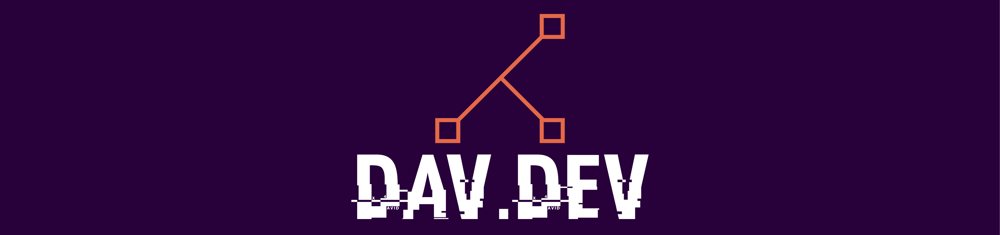

Hello World!
my name is David and I'm an aspiring web developer. Welcome to my portfolio - feel free to explore my projects
.1st-project{
after 2 weeks of learning html and css basics, this was created as a final project of the DCI orientation course. Central element is a flexbox img gallery with a hover effect as a means of navigation. It was a challenging but fun project to work on as I was able to put the puzzle of what I had previously been presented together. Looking back I would have liked to clear up the code a bit more since I left the project with the feeling of having created a huge mess. The topic presented in this simple info page is the country french-guyane, which i visited in 2019 for a short internship at the European Space Agency ESA. After successfully completing the orientation course, I was accepted into the full year course at DCI where i now proceed my journey to become a Fullstack Web Developer.}
.2nd-project{
A small side project in the early days of the DCI full year course. I simply wanted to play around with hover effects and transitions some more. Also it was first meant to be part of a bigger group-project with my classmates aiming to create a website as a collection of useful resources for the course. I uncluded logos of the first 3 Cheat Sheets we had been presented with in the course as my team was initially supposed to build a landing page. Unfortunately the group didn't pursue the project any further which is why I used my draft to simply link some of the ressources I had already collected and used for my own learning process. In addition it was the first project i deployed on github pages and I was able to gather first experience with Bootstrap. }
.3rd-project{
This was the first group project I was part of. It was created during the first weeks of the DCI full year courses' UI/UX part. The task was to create a landing page for a fictional company. The project was a great experience as it was the first time I worked with git and github in a team. Since i was unvoluntaryly announced the teamlead, I learned a lot about the importance of communication and the need to be able to work in a team. I also learned a lot about the importance of planning and structuring a project. Despite issues with my liberal leading style, the project was a great experience and I am looking forward to working on more projects in the future.}skills and resources
solid foundational skills after 3 months of learning HTML and CSS basics at the DCI orientation, the UI/UX part of the full year course, as well as ZTM and FreeCodeCamp
solid foundational skills after 3 months of learning HTML and CSS basics at the DCI orientation, the UI/UX part of the full year course, as well as ZTM and FreeCodeCamp
first theoretical knowledge gained through "Phillip Ackermann - Fullstack Entwicklung, Handbuch für Webentwickler" and eager to learn more within the DCI course